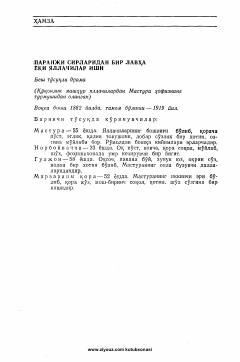

PSYallachilar turmushidan hikoya qiluvchi mashhur drama.
Ushbu asar Hamza Hakimzoda Niyoziy qalamiga mansub besh to'qqli drama bo'lib, 1882–1919 yillardagi voqealarni o'z ichiga oladi. Asar qo'qonlik mashhur yallachilardan Mastura Xofizning turmushidan olingan lavhalar asosida yozilgan.